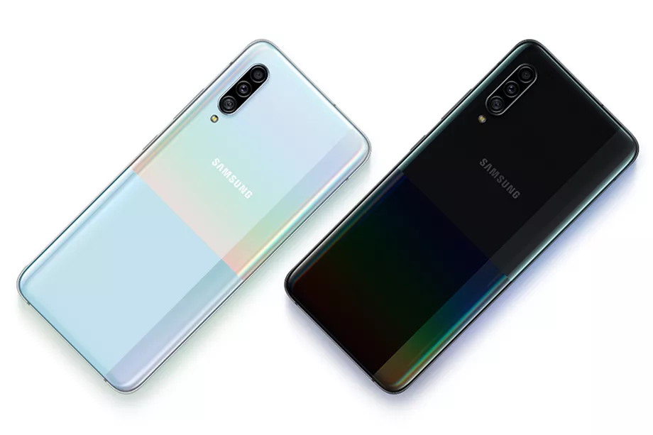
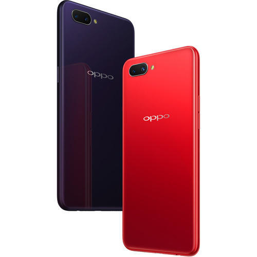
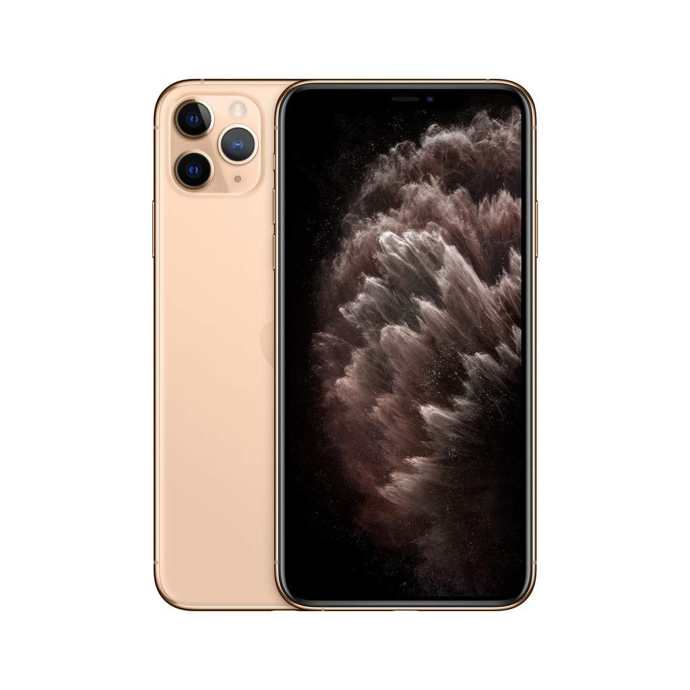
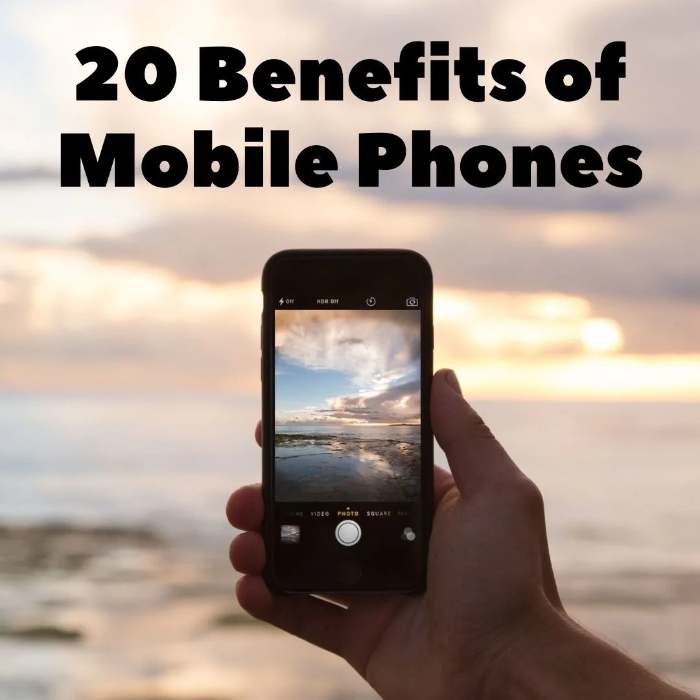

Samsung was founded by Lee Byung-chul in 1938 as a trading company. Over the next three decades, the group diversified into areas including food processing, textiles, insurance, securities, and retail. Samsung entered the electronics industry in the late 1960s and the construction and shipbuilding industries in the mid-1970s; these areas would drive its subsequent growth. Following Lee's death in 1987, Samsung was separated into five business groups – Samsung Group, Shinsegae Group, CJ Group and Hansol Group, and Joongang Group. Since 1990, Samsung has increasingly globalised its activities and electronics; in particular, its mobile phones and semiconductors have become its most important source of income. As of 2020, Samsung has the 8th highest global brand value.

Guangdong Oppo Mobile Telecommunications Corp., Ltd, doing business as Oppo,[a] is a Chinese consumer electronics and mobile communications company headquartered in Dongguan, Guangdong. Its major product lines include smartphones, audio devices, power banks, Blu-ray players, and other electronic products The brand name "Oppo" was registered in China in 2001 and launched in 2004.[1] Since then, they have expanded to more than 40 countries.[1] In June 2016, Oppo became the biggest smartphone manufacturer in China,[2] selling its phones at more than 200,000 retail outlets.[3] Oppo was the top smartphone brand in China in 2019 and was ranked No. 5, in market share, worldwide.

The iPhone has a user interface built around a multi-touch screen. It connects to cellular networks or Wi-Fi, and can make calls, browse the web, take pictures, play music and send and receive emails and text messages. Since the iPhone's launch further features have been added, including larger screen sizes, shooting video, waterproofing, the ability to install third-party mobile apps through an app store, and many accessibility features. Up to 2017, iPhones used a layout with a single button on the front panel that returns the user to the home screen. Since 2017, more expensive iPhone models have switched to a nearly bezel-less front screen design with app switching activated by gesture recognition.

1-Communication 2- Small and Convenient 3- Photos and Video 4- Texting 5- Fashion and Self-Expression 6- Entertainment 7- Notes and Reminders 8- Video in Real Time 9- Calendars and Organization 10- Maps, Navigation, and Travel 11- Online Banking and Finance 12- Address Book and Contacts 13- Remote Working 14- Emergencies 15- Watches and Alarm Clocks 16- Calculator 17- Flashlight/Torch 18- News, Sports, and Live Events 19- Crime Prevention and Evidence Gathering 20- Learning and Research
A mobile phone, cellular phone, cell phone, cellphone, handphone, or hand phone, sometimes shortened to simply mobile, cell or just phone, is a portable telephone that can make and receive calls over a radio frequency link while the user is moving within a telephone service area. The radio frequency link establishes a connection to the switching systems of a mobile phone operator, which provides access to the public switched telephone network (PSTN). Modern mobile telephone services use a cellular network architecture and, therefore, mobile telephones are called cellular telephones or cell phones in North America. In addition to telephony, digital mobile phones (2G) support a variety of other services, such as text messaging, MMS, email, Internet access, short-range wireless communications (infrared, Bluetooth), business applications, video games and digital photography. Mobile phones offering only those capabilities are known as feature phones; mobile phones which offer greatly advanced computing capabilities are referred to as smartphones.
History Main article: History of mobile phones Martin Cooper of Motorola, shown here in a 2007 reenactment, made the first publicized handheld mobile phone call on a prototype DynaTAC model on 3 April 1973. A handheld mobile radio telephone service was envisioned in the early stages of radio engineering. In 1917, Finnish inventor Eric Tigerstedt filed a patent for a "pocket-size folding telephone with a very thin carbon microphone". Early predecessors of cellular phones included analog radio communications from ships and trains. The race to create truly portable telephone devices began after World War II, with developments taking place in many countries. The advances in mobile telephony have been traced in successive "generations", starting with the early zeroth-generation (0G) services, such as Bell System's Mobile Telephone Service and its successor, the Improved Mobile Telephone Service. These 0G systems were not cellular, supported few simultaneous calls, and were very expensive.
Types Active mobile broadband subscriptions per 100 inhabitants.[18] Smartphone Main article: Smartphone Smartphones have a number of distinguishing features. The International Telecommunication Union measures those with Internet connection, which it calls Active Mobile-Broadband subscriptions (which includes tablets, etc.). In the developed world, smartphones have now overtaken the usage of earlier mobile systems. However, in the developing world, they account for around 50% of mobile telephony. Feature phone Main article: Feature phone Feature phone is a term typically used as a retronym to describe mobile phones which are limited in capabilities in contrast to a modern smartphone. Feature phones typically provide voice calling and text messaging functionality, in addition to basic multimedia and Internet capabilities, and other services offered by the user's wireless service provider. A feature phone has additional functions over and above a basic mobile phone which is only capable of voice calling and text messaging.[19][20] Feature phones and basic mobile phones tend to use a proprietary, custom-designed software and user interface. By contrast, smartphones generally use a mobile operating system that often shares common traits across devices.